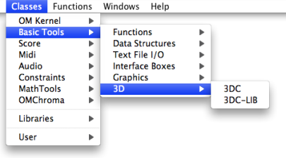

OpenMusic DocumentationHiérarchie de section : OM 6.6 User Manual > Basic Tools > Curves and Functions > 3D Objects > 3DC-Lib
OpenMusic DocumentationHiérarchie de section : OM 6.6 User Manual > Basic Tools > Curves and Functions > 3D Objects > 3DC-Lib
Navigation : page précédente | page suivante
Attention, votre navigateur ne supporte pas le javascript ou celui-ci à été désactivé. Certaines fonctionnalités de ce guide sont restreintes.
Multiple 3DCs : 3DC-Lib
3DC-Lib
| The 3DC-Lib objects is similar to a BPC-Lib . As for BPFs and BPCs, collections of 3DC objects can be created and stored in the 3DC-lib object. |
Access

To add a 3DC object, type its name or go to the Classes / Basic Tools / 3D menu.
Inputs and Outputs
The 3DC-Lib object has two inputs and outputs :
"self" : the object itself
"bpf-list" : a list of 3DC objects

A 3DC-Lib and its editor.
Editor Display
To display all the curves in the 3DC-Lib editor, select the
Show Alloption.To display the current active curve, unselect this option. By default, the displayed curve is curve #0.

To display and activate a specific curve, use the TAB key. The current active curve index is indicated under the Selected Curve label.
If the 2D Editors option is selected, the corresponding 2D editors will be refreshed automatically in the window.

Naming Curves
Use n to set a name to the current curve. This name will the appear on the left panel, next to the curve index.
Editing Curves
The active selected curve of a 3DC-Lib can be edited as in a 3DC editor.
Adding / deleting 3DCs
To add a new 3DC in the collection, press +.To remove the current curve, press -.
When a new curve is added, it is added right after the current curve.
3DC-Lib Edition
Only one 3DC can be visualized and edited at a time in the 2D projections.
The precision value, if modified, will be applied to all the 3DC objects in the 3DC-Lib.
Références :
Plan :
Navigation : page précédente | page suivante
A propos...(c) Ircam - Centre Pompidou